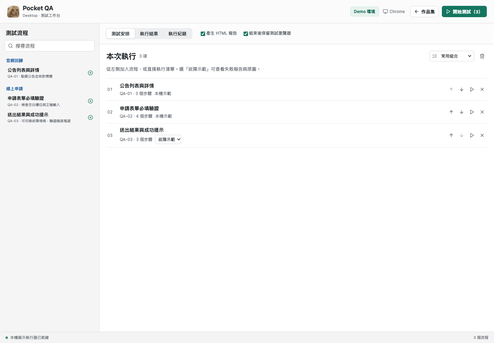
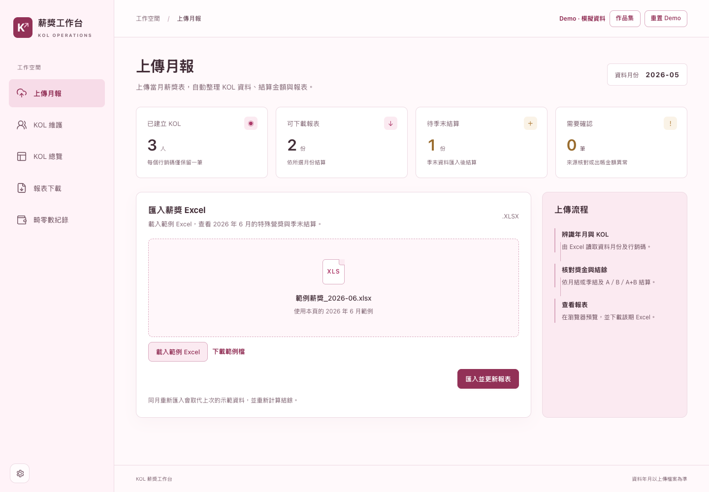

自動化測試與診斷
Pocket QA Desktop
- 發現痛點
- 例行上版回歸流程重複度高，且失敗時常缺乏當下畫面與時間線證據，增加 RD 追查成本。
- 主動解法
- 規劃可自選流程、排程順序與重跑的桌面工作台，在失敗當下自動保存完整原圖截圖與步驟紀錄，並產出可離線分享的 HTML 報告。
Web QA 測試工程師 · 流程改善 × AI 協作工具開發
專注於證券／金融服務網頁驗證（官網、線上開戶、CMS 後台審核與跨系統介接）。在日常測試中不只回報單點 Bug，更習慣主動觀察團隊與跨部門的重複作業、溝通斷點，由我梳理業務規則、例外邊界與驗收標準，並結合 AI 協作將解法做成可實際操作、可留存證據的工具。
看到反覆人工回歸、交接資訊漏接或複雜人工作業，主動定義流程並推動工具化解決。
堅持完整原圖截圖、操作時間線與預期／實際對照，讓 RD 與 PM 能一次看懂並精準定位。
由本人負責需求拆解、邊界條件與驗收把關，結合 AI 協作快速實作並依實際使用回饋迭代。



